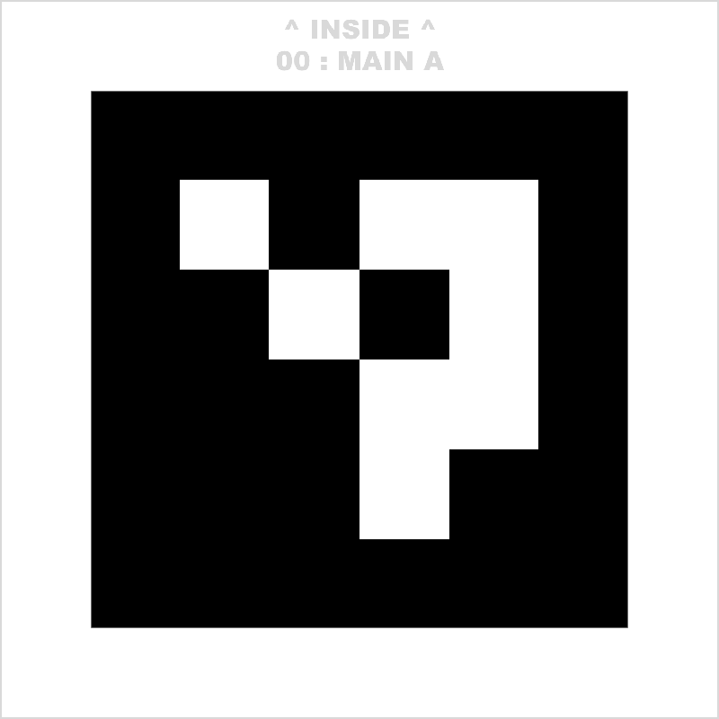
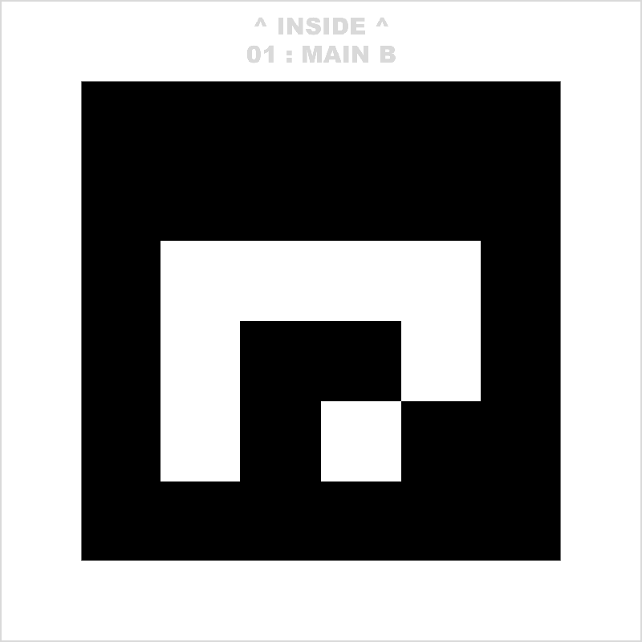
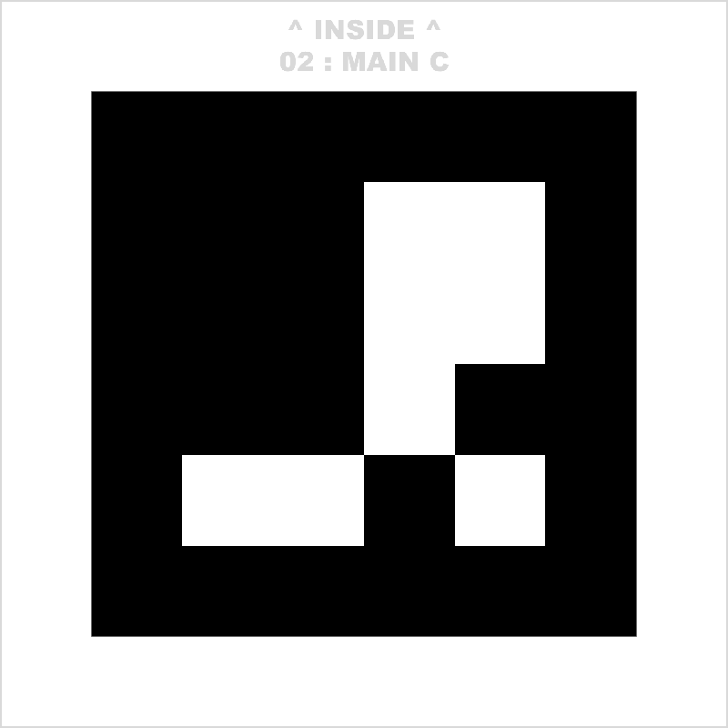
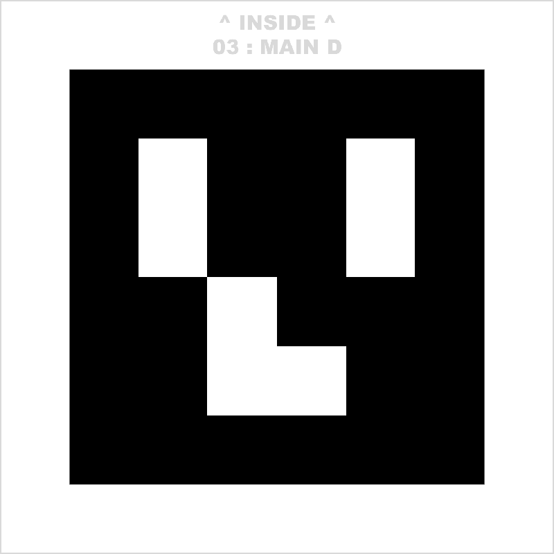

Settings: |
| Pilot | Lap | Time | Split |
|---|
AR lap tracker is a web tool for tracking laps in FPV drone racing by marking finish line with AR markers/QR codes and recognizing them in VTX video feed. You'll need USB OTG 5.8Ghz video receiver to use it.
Print any (you only need one) of the following markers on A4 paper and place it near the finish line.
   Set margins to zero during printing to maximize the picture size on paper.
Connect USB OTG video receiver to your PC - it automatically acts as an ordinary webcam.
Configure the settings and hit Start race!
Marker size - the length of black square's side in meters, on A4 from pdf it's usually about 16cm, so input 0.16. This is used to determine distance to the marker and ignore it if it's too far away
Lap finished when distance to marker less than - when drone is near the marker and marker goes out of sight - the app assumes that pilot passed the finish gate. Configure this distance threshold. Note that some cameras have narrow FOV and can't see marker when they are too close to it so be sure to test it on different drones before the race.
NOTE! At the moment there is a bug, where distance to marker may be determined a but incorrectly and depend on camera FOV. Please check this and slightly adjust this settings for your environment if needed (usually the difference between measured and actual distance is within 10%, so it is not needed) - better just to put higher value here. The lap finish registration happens based on the distance shown as number overlay and not on the blue box size, although they are expected to be the same if everything works correctly.
Min lap time - set min lap time to ignore cases when pilot got stuck near the finish gate for some time. Adjust it it the actual length of your track.
Record video - in case of any lap counter errors we want to record video to be able to correct manually after the race. If this option is checked - you'll be asked to choose the browser tab to record and only then the race will start.
Also this option guards your from accidentally erasing results after race was stopped if you've unintentionally clicked Start race again since you'll need to select screen to record first and only then previous results would be erased.
Countdown - random or fixed countdown can be configured, you'll hear beeps every second and then the start sound.
Camera - connect USB video receiver and select it in this dropdown. In order to remove the device - select Remove pilot option.
Pilot name - pilot name to use when tracking laps to distinguish between several pilots. Make sure all pilots have unique names!
Settings are saved to window url and are preserved upon refresh. This may be useful in receiver got stuck or you have performance degradation and need to reload the page. To reset the settings to defaults - click on Reset link in the Settings panel.
Before starting the race you should power your drone and point it to the marker - the app should show a colored box where it detects the marker and distance to it. Check if shown distance to marker is correct - otherwise adjust marker size in settings.
If you don't see the box - make sure your marker is clearly visible through the camera and sheet of paper is not bent - it should be straight. Marker rotation over any axis doesn't matter.
Marker is - white pattern in the center with black area around it and it also must have a white contrasting border around the black area to be recognized.
If marker is partially visible - it won't be recognized. Bear in mind that marker can also be covered by OSD (especially low battery warning later in race!) or VTX noise.
Our markers are taken from TinyViewPlus lap tracker to be cross-compatible. It doesn't matter which one of them you use.
To increase probability of marker recognition - you can place several markers (print one image several times or use different - doesn't matter) around the finish gate - if at least one of them is recognized the lap will be recorded correctly. Although if you use same image several times then the app will shift colored area between them depending on which one is better visible - it doesn't affect lap tracking since in this case marker is still considered constantly visible.
Marker needs to stay visible on screen and not be too shaky for about 0.5 sec in order to be recognized. When planing track layout a typical option is to have finish gate about 3-5m after 180 degree turn so that pilots slow down, face the gate with markers and then approach it in a straight line.
If recording is many minutes long it may consume all memory - not tested currently, but probably will be fixed later.
Tested with: